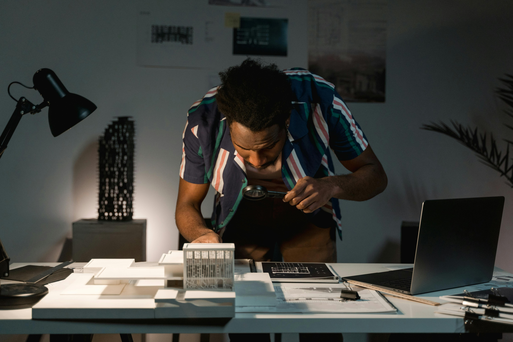

Ing. arch. Anna Mäkká & spol. — počúvame klienta, rešpektujeme miesto a hľadáme rovnováhu medzi krásou a funkciou. Každý projekt je pre nás samostatný príbeh.
Od absolvovania fakulty až po vlastný ateliér s realizáciami po celom Slovensku — každá etapa formovala náš architektonický rukopis.

2006
Absolventka FA STU Bratislava
Ukončenie štúdia na Fakulte architektúry Slovenskej technickej univerzity v Bratislave.
2004–19
Koreňová architekti Žilina
Dlhoročná spolupráca na množstve štúdií, projektov a realizácií v renomovanom žilinskom ateliéri.
2010
Vlastné projekty a realizácie
Začiatok vlastnej projektovej činnosti — štúdie, projekty a realizácie od centra Žiliny cez Kysuce, Považie a ďalej.
2017
Autorizácia SKA
Získanie autorizácie v Slovenskej komore architektov — záruka odbornosti a kvality každého projektu.
dnes
Ateliér atearch
Komplexné architektonické služby — konzultácie, štúdie, projekty a realizácie pre bývanie, komerciu, kultúru aj priemysel.
Čomu verímeNAŠE HODNOTY
01
EMPATIA
Vcítenie sa do požiadaviek klienta je základom každého nášho projektu. Počúvame, aby sme navrhli správne.
02
ORIGINALITA
Každé stavebné dielo nesie originálny architektonický rukopis s modernými i tradičnými prvkami.
03
ROVNOVÁHA
Proporcia medzi estetickou kvalitou a požadovanou funkciou — krása, ktorá slúži každý deň.
Oprávnenie
AUTORIZOVANÁ ARCHITEKTKA
Ing. arch. Anna Mäkká je autorizovanou architektkou v Slovenskej komore architektov od roku 2017. Autorizácia zaručuje splnenie najvyšších odborných a etických štandardov pri každom projekte.
SKA
Slovenská komora architektov · od 2017
Kompletný servis
ČOHO SA UJMEME
Konzultácia a investičný zámer
Architektonická štúdia a vizualizácia
Projekt pre územné povolenie
Projekt pre stavebné povolenie
Realizačný projekt
Autorský a stavebný dozor
Inžiniering a správa stavby
Návrh interiéru a realizácia
POROZPRÁVAJME SA O PROJEKTE
Tvoríme v každom prostredí a čase — kontaktujte nás.